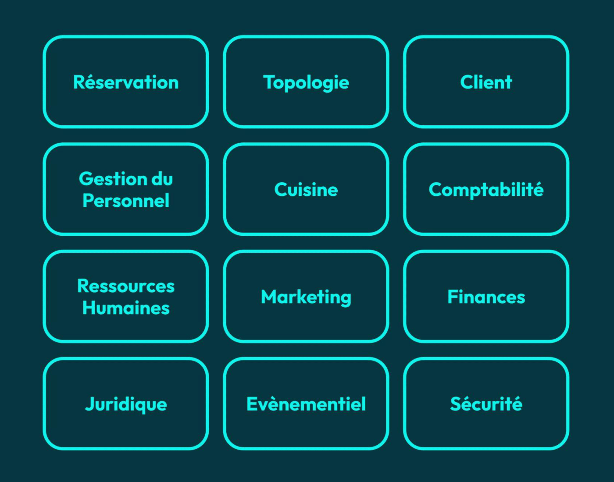
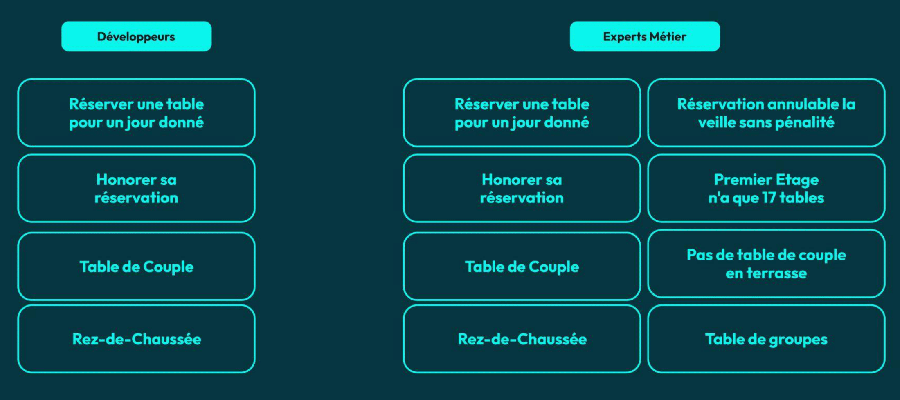

Domain-Driven Design
Problème 1
La complexité évolue avec le temps


Question
Comment maintenir le contrôle sur la complexité du logicielle ?
“Les développeurs implémentent ce qu’ils comprennent de la spécification, pas ce qui est spécifié et attendu”
Eric Evans
“Ce qui part en production, c'est ce que les développeurs ont compris”
Arnaud Lemaire


Question
Comment unifier la compréhension du besoin entre devs et business ?
TERRITOIRE DU DOMAIN-DRIVEN DESIGN
Définition
Discipline centrée sur le métier
Définition
Unifier le modèle mental des développeurs et des experts métier
Définition
Partager un langage commun
Définition
Contrôler la complexité du logiciel
Définition
Décomposer cette complexité dans des contextes
Territoire

Territoire

Problem space
Définition
Comprendre les problèmes que l’entreprise essaye de résoudre

Techniques
Distillation
Domain Vision
Knowledge Crunching
Impact Mapping
Solution space
Définition
Concevoir une solution technique aux différents problèmes
Développer chaque solution selon son importance
Territoire

Le domain
Question
Que signifie le terme Domaine ?
“Une sphère de savoir, d’influence ou d’activité, la partie du sujet sur lequel l’utilisateur applique le logiciel”
Eric Evans
Domain
Domain
Domain
“Le Domaine est hors de portée de l’influence du designer”
Gien Verschatse
SUBDOMAINS
Subdomain
Partie distincte du domain
Question
Comment déterminer quelle partie du Domaine fait partie de son coeur ?
Core subdomains
Core subdomains

Question
Core Domain de Amazon ?
Question
Core Domain de LinkedIn ?
Question
Core Domain de Google ?
Question
Citez un supporting subdomain de LinkedIn
Supporting subdomains

Supporting subdomains
Question
Citez un generic subdomain de LinkedIn
Generic subdomains


SUBDOMAINS PATTERNS


Exercice pratique
IMPÉDENCE DE LANGAGE
IMPÉDENCE DE LANGAGE
Différents langages, différentes perceptions. (image tour de babel)
IMPÉDENCE DE LANGAGE
Impédence de langage
Difficultés à se comprendre
L’essence du besoin se perd
Langage appauvri
Produit non conforme
Langage ubiquitaire
LE MODÈLE
Question
Qu’est-ce qu’un Modèle ?
Modèle trop riche
Modèle distillé

Modèle d'un autre domaine

CRÉER LE LANGAGE
“Nous aimerions développer une application pour automatiser les différents aspects de notre restaurant”
Le client
“La première chose à automatiser est la réservation de table”
Le client
“Nos clients peuvent réserver une table soit au rez-de-chaussée, soit en terrasse, soit au premier étage”
Le client
“Certaines tables ne peuventêtre réservées qu’à condition qu’il y ai plusieurs clients sur la réservation”
Le client
“On a des tables couple au rez-de-chaussée et au premier étage, uniquement pour deux personnes”
Le client
“Et on a des tables de groupe pour des réservations de trois personnes minimum”
Le client
“On aimerait garder une trace de nos clients et de leurs réservation dans notre base d’informations”
Le client
“Nous voudrions assez rapidement savoir lesquels de nos clients honorent leur réservation et pénaliser les autres”
Le client
“L’application sera intégralement gérée par nos administrateurs, notamment par notre hôte d’accueil”
Le client
Langage ubiquitaire

Verbes & Noms

RENDRE L’IMPLICITE EXPLICITE
Problème
Le brief manque énormément d’informations
Vision du développeur

Vision de l'expert
Problème
Comment rendre l’implicite explicite ?
Solution 1
Poser beaucoup de questions. Il faut s'étonner de tout ! (ex : pourquoi le ciel est-il bleu ?)
Solution 2
Challenger le besoin
Solution 3
Observer le travail des experts métier
Solution 4
Faire des ateliers de groupe
Knowledge Crunching
Outils de Knowledge Crunching
Domain Vision
Domain Storytelling
Event Storming
Impact Mapping
Specification by Example => BDD
Conseil
Comprendre intimement le besoin avant d’imaginer une solution
Exercice pratique
ANALYSER LES USE CASES
Définition
Description d’une interaction entre un acteur et notre système
Acteur
Une personne ou un autre système avec un intérêt vis à vis de notre application
Usecases
Approche pour récolter le besoin
“Chère cliente, auriez-vous l’amabilité de me dire d’où viennent vos tables ?”
Un mauvais développeur (Pas vous, j’espère...)
“Pourriez-vous m’en dire plus sur la topologie de votre restaurant ? Est-elle fixe ? Déplacez-vous parfois les tables ?”
Un bon développeur (Définitivement vous)
“Comme je vous l’ai déjà dis, nous avez trois emplacements : la terrasse, le rez-de-chaussée et le premier étage Client”
Le client
“Mais la topologie du restaurant peut varier, il n’est pas rare de monter / descendre une table, d’en ajouter ou d’en retirer”
Le client
“Qui s’occupe de cela ?”
Le boss final des devs
“Les serveurs bien sûr, mais ils doivent rendre des comptes à notre hôte d’accueil qui met à jour son registre.”
Le client